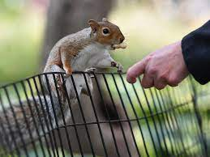
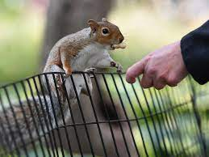
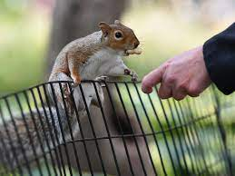

Have you ever wondered how many squirrels are in NYC parks, where they are located, and what they are up to? Do you like people-watching, storytelling, music, fortunes, meditation, squirrel jokes, making fun of dogs, food reviews of data, squirrels teaming up to fight a hungry hawk, and the phrase “forever wild”?
The Squirrel Census is a multimedia science, design, and storytelling project focusing on the Eastern gray (Sciurus carolinensis). They count squirrels and present their findings to the public. This table contains squirrel data for each of the 3,023 sightings, including location coordinates, age, primary and secondary fur color, elevation, activities, communications, and interactions between squirrels and with humans.
NYC Open Data is an opportunity to engage New Yorkers in the information that is produced and used by City government. We believe that every New Yorker can benefit from Open Data, and Open Data can benefit from every New Yorker. A test count was performed by the Census team and volunteers in November of 2019. Carrying maps of their assigned quadrants and tally sheets, the Census takers spent a weekend walking the neighborhood and counting the number of squirrels they saw in a total of 35 hectares, taking 20-30 minutes in each location during squirrel peak-activity times. Problems with the tally sheet were noted. Challenges of counting squirrels were discovered. Things were fine-tuned.
